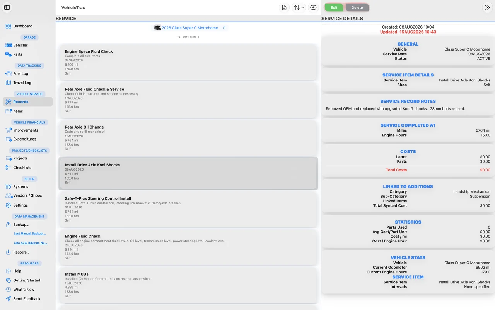
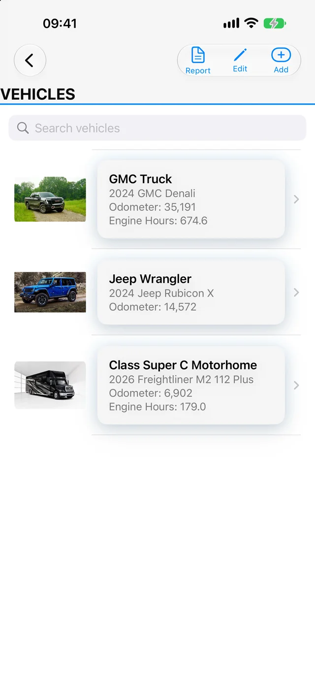
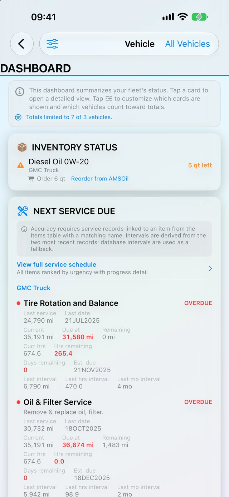

iPhone · iPad · Mac
Every service, every gallon, every mile — on record.
VehicleTrax keeps the maintenance history, fuel logs, parts, projects and running costs for everything you own that has an engine or an axle. One app, one purchase, synced across your devices with iCloud.
Free to try · one-time $19.99 unlock · no subscription · no account required
- Chassis lubrication every 6 months · last 06/14/2025 11 days overdue
- Engine oil & filter every 5,000 mi · last 64,680 mi due in 320 mi
- Generator service every 150 hrs · 108 hrs run 42 hrs left
- Tire rotation every 7,500 mi · last 63,050 mi due in 2,138 mi
- Water heater anode rod every 12 months · last 01/09/2026 due in 4 months
Sample data · intervals by mileage, calendar or engine hours
- Sync
- iCloud keeps every vehicle current on iPhone, iPad and Mac.
- Privacy
- No account, no sign-up, and no data collected by the developer.
- Fleet size
- Cars, trucks, RVs, boats, trailers and equipment — all in one place.
- Reports
- Export a PDF service history for resale, warranty or the shop.
What it tracks
Built for people who actually keep the records.
Not a mileage counter. VehicleTrax models the way maintenance really works — intervals that come due by odometer, calendar or hours, parts you keep on the shelf, and projects that run for months.
Maintenance schedules
Reusable templates with intervals by mileage or calendar date, so the next service date is always calculated, never remembered.
Fuel & economy
Log fill-ups and watch consumption trend in MPG, L/100 km or km/L — whichever unit you think in.
Specs & parts inventory
Filter numbers, belt sizes, fluid capacities and torque specs stay attached to the vehicle they belong to.
Trip logging
Record trips with distance and cost, so you know what a season of travel actually ran you.
Upgrades with photos
Document every modification with photo attachments and notes — the record a future buyer will want to see.
Projects & punch lists
Plan a long refit as a project, then work it down item by item instead of losing it in a notes app.
Checklists
Reusable checklists with nested sub-items for departure, winterizing, launch or pre-trip inspection.
Expenses & subscriptions
Categorize spending and keep recurring costs — insurance, storage, roadside — in the same ledger.
PDF reports
Generate a clean service history on demand for a buyer, a warranty claim or your own records.
Screens
See it running.
The same records on every device — a full three-column window on the Mac, the whole fleet in your pocket on iPhone.



Pricing
Try it first. One purchase after that.
Download VehicleTrax and start entering real records straight away. The trial keeps working for as long as you want it — it does not expire, and there is no subscription. When you outgrow its limits, one purchase removes them for good.
VehicleTrax Trial
Freeno expiry, no account
The whole app, with room to evaluate it properly.
- Up to 2 vehicles
- Up to 10 records in each table
- Every feature and every screen in the app
- Read any PDF report on screen
- Manual backup and restore — your data is never locked in
- iCloud sync across your devices
VehicleTrax Full
$19.99one-time in-app purchase
Every limit removed, plus export and automatic backups. Nothing else to buy, ever.
- Unlimited vehicles and equipment
- Unlimited records in every table
- Export, print and share PDF reports
- Automatic backups
- Universal across iPhone, iPad and Mac
- Covered by Family Sharing
- Every future update included
Questions